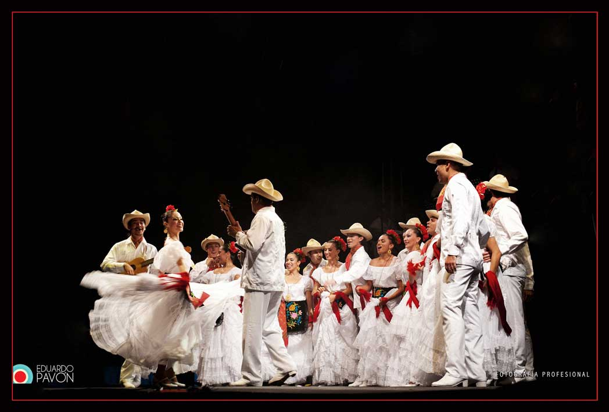

Para conocer toda la información, haga clic en la flecha de la derecha.
Este primer módulo está diseñado para que analice e investigue, por medio de diversas lecturas, acerca de la historia y tradición del son jarocho; así mismo, para que ejecute algunos pasos, mediante la explicación presentada en los videos didácticos, que se muestran más adelante, mismos que lo sensibilizarán ante esta expresión.
Para conocer más acerca de la historia del son jarocho y su evolución, le invito a leer la siguiente información:
Para ello, haga clic sobre la imagen:
A continuación, lea los siguientes documentos para conocer más sobre el son jarocho:
Ahora, revise la siguiente presentación concerniente al son jarocho:
El son jarocho es una tradición lírico-musical única que se ha popularizado principalmente en el estado de Veracruz y que al paso de los años ha evolucionado. Antiguamente esta manifestación estaba prohibida por la Santa Inquisición, sin embargo, los pobladores alejados de dicho juicio animaban sus reuniones con coplas, música y danza, rasgos culturales que siguen presentes hasta nuestros tiempos y que podemos observar en el fandango, en el que no pueden faltar los bailadores, versadores y músicos interpretando el incomparable son jarocho.
El fandango, con el paso de los años se llenó de rituales, símbolos y reglas que podrían pasar inadvertidas por los observadores casuales pero, años posteriores a la Revolución Mexicana, las expresiones culturales jarochas sufren una reestructuración al ser adaptadas para ser consumidas de forma masiva, pues en el cine mexicano se promovían “sones comerciales o de evolución”, como la Bamba, por ejemplo, que buscaban identificar las expresiones culturales mexicanas frente al mundo, sustituyendo el espíritu del sotavento por jarochos de traje blanco y bailes estilizados. Esto trajo consigo que muchos músicos del sotavento emigraran a las grandes ciudades aprovechando la popularidad del género, provocando una merma de esta expresión.
Actualmente, el movimiento jaranero intenta recuperar las bases de la tradición y una pervivencia del fandango como una de las tradiciones más importantes del estado de Veracruz.
Como lo vimos anteriormente, el son jarocho suele acompañarse del baile, el cual se ejecuta sobre una tarima emitiendo una combinación de sonidos y silencios al ritmo de la música, quedando como evidencia de la influencia española en nuestra cultura.
Durante un fandango los sones jarochos pueden ser de muy larga duración, pero para un hecho escénico, es decir, lo que vemos en un escenario, los sones sueles ser cortos. El son jarocho se divide en música, canto y estribillo, mismas que se repiten cuantas veces sea necesario, dependiendo de la duración deseada.
Para leer la definición de la clasificación sobre los pasos del son jarocho haga clic en el recuadro:
Aquellos pasos que emiten un sonido más fuerte en la tarima. Éstos se realizan durante la música, mientras se está tocando el son jarocho, pero sin canto.
Al producirse un sonido de menos intensidad, se realizan durante el canto. A lo largo de los estribillos de cada son se harán zapateados.
A continuación, aprenderá cuatro pasos del son jarocho (dos zapateados y dos descansos) los cuales podrá ejecutar en distintos tipos de sones (de montón, de pareja o de evolución). Cabe destacar que no son los únicos y que no son pasos exclusivos de algún son en especial.
Le invito a visualizar los siguientes videos en donde podrá aprenderlos y le sugiero practicarlos las veces que lo considere necesario, ya que más adelante tendrá que elaborar un video.
Seleccione la pestaña que corresponda para visualizar cada uno de los videos:
Ahora le invito a visualizar los siguientes videos en los que podrá observar la propuesta de secuencia de pasos para el son “El fandanguito”. Le sugiero practicarla cuantas veces lo considere necesario, ya que más adelante tendrá que elaborar un video.
Seleccione la pestaña que corresponda para visualizar cada uno de los videos.
Barahona, A. (2009, enero). El son jarocho: un tesoro que debemos conservar. REVISTA EntreVerAndo, 19-23. https://cdigital.uv.mx/bitstream/handle/123456789/8933/ar4_p19-23_2009-3.pdf?sequence=1&isAllowed=y
Figueroa, R. (s.f.) Historia del son jarocho. Comosuena.com http://www.tlaco.com.mx/cultura/pdf/SonJarocho.pdf
Secretaria de Cultura. (2019). Cántame un son jarocho. Mexicana. Dirección General de Tecnologías de la Información y Comunicaciones de la Secretaría de Cultura. https://mexicana.cultura.gob.mx/es/repositorio/x2b5egs060-4
Fernández, M. A. (2006). Segunda Parte. Investigación Empírica. III. Una “gran” historia. En Procesos cognitivos en la construcción de la identidad del son jarocho [Tesis] (pp. 95-132). Editorial de la Universidad de Granada. https://digibug.ugr.es/handle/10481/1630
Tele UV. (2021, 19 agosto). Veracruz Afrodescendiente. Capítulo 1. La impronta africana en el Estado de Veracruz [video]. YouTube. https://www.youtube.com/watch?v=07JncbiQbIk&list=PLlUi5F-vJTkNTsu7qYJAniwQD8Rgh8zCc
García de León, A. & Rumazo, L. (2006). Introducción. En Fandango. El ritual del mundo jarocho a través de los siglos (pp. 13-17), Consejo Nacional para la Cultura y las Artes/Instituto Veracruzano de Cultura/Programa de Desarrollo Cultural del Sotavento.
Figueroa, R. (2007). Capítulo III: Desarrollo histórico. En Son jarocho. Guía histórico-musical. Consejo Nacional para la Cultura y las Artes/Fondo Nacional para la Cultura y las Artes.
{kind=link}
{kind=link}
{kind=link}